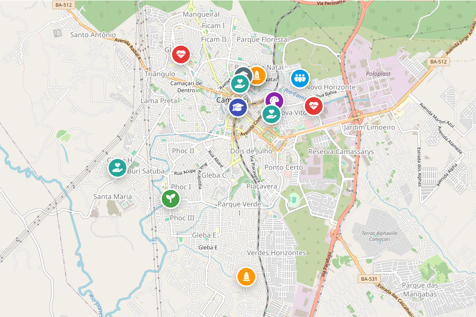

Conheça a história, o patrimônio, a cultura e os projetos que transformam o município de Camaçari.
Explorar ObservatórioO Observatório Digital de Camaçari é um portal desenvolvido pelos estudantes para reunir pesquisas, registros fotográficos, entrevistas e informações sobre os patrimônios históricos, culturais e sociais do município.
Nosso objetivo é divulgar conhecimentos produzidos durante o projeto interdisciplinar, valorizando a memória, a identidade e as iniciativas que contribuem para uma sociedade mais justa, inclusiva e consciente.

O observatório teve como objetivo identificar, analisar e dar visibilidade às práticas, aos saberes e às experiências desenvolvidas em Camaçari que contribuem para a valorização dos povos indígenas, afro-brasileiros e das comunidades tradicionais como produtores de conhecimento, cultura e transformação social. O nosso observatório é fundamentado nos conceitos de contracolonialidade, de Nego Bispo, Bem Viver, de Ailton Krenak, e epistemologias afro diaspóricas.
Nossa pesquisa permitiu identificar iniciativas desenvolvidas em comunidades quilombolas, terreiros de matriz africana e organizações locais, evidenciando a permanência dos saberes tradicionais e sua contribuição para a preservação da memória coletiva, da identidade cultural e da sustentabilidade. O produto é destinado a reunir, organizar e divulgar informações sobre iniciativas culturais, sociais, educativas e ambientais, contribuindo para a preservação do patrimônio cultural, o fortalecimento da identidade local e a democratização do acesso ao conhecimento.
(completar)
(completar)
| Métricas | Projetos Sociais | Bairros | Políticas Públicas |
|---|---|---|---|
| Quantidade Total | 56 | 20 | 256 |
| Quantidade Encontrada | 46 | 10 | 25 |
| % Encontrada | 90% | 20% | 12% |
O Observatório Digital de Camaçari é um portal desenvolvido pelos estudantes para reunir pesquisas, registros fotográficos, entrevistas e informações sobre os patrimônios históricos, culturais e sociais do município.
Nosso objetivo é divulgar conhecimentos produzidos durante o projeto interdisciplinar, valorizando a memória, a identidade e as iniciativas que contribuem para uma sociedade mais justa, inclusiva e consciente.
